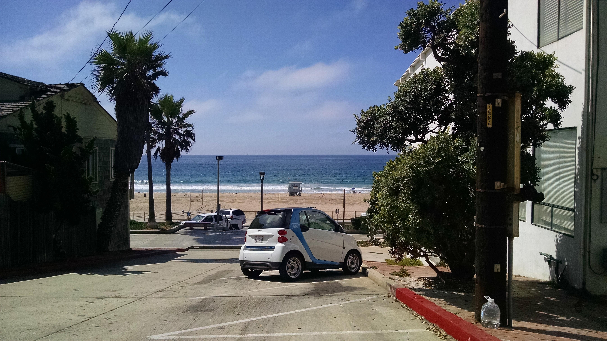

Intro
Car2Go is a carsharing service that is rapidly expanding in the US. It has some things in common with its better-known, longer-established competitor Zipcar, offering short-term rentals of cars parked on the street rather than in rental car lots. But Car2Go has a unique twist that other car retal/car share schemes do not: customers can leave Car2Go vehicles in any legal parking space, instead of being required to return to their starting point.
In PPD-306 Visual Methods in Policy, Management, Planning and Development at USC, I have been tracking and analyzing data on Car2Go, studying carsharing, and creating display projects to help give a better picture of Car2Go's network, how people use it, and what Car2Go and carsharing mean for cities. Those projects are presented here.
A car2go relaxes by the water in Redondo Beach